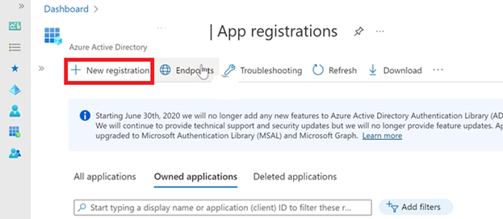
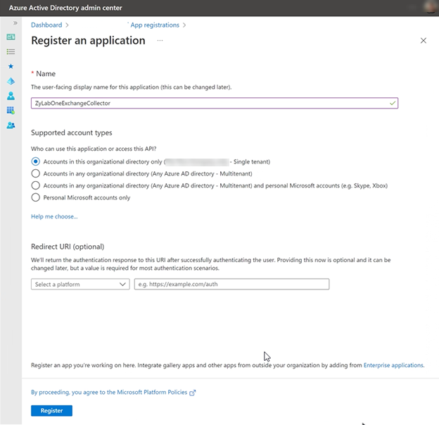
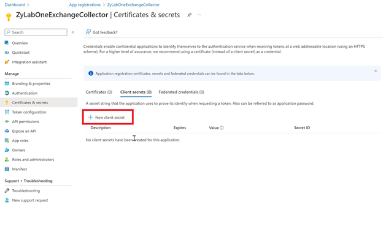
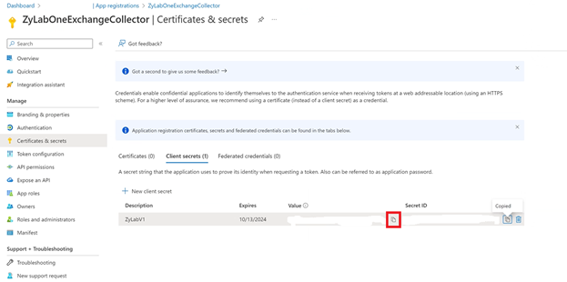
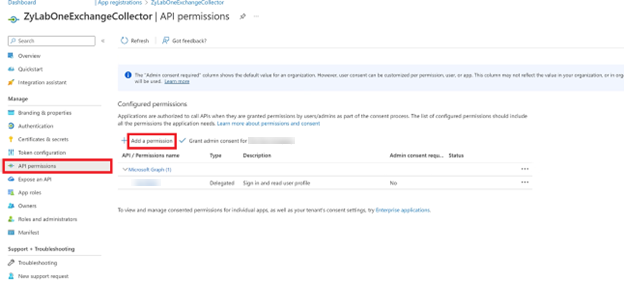
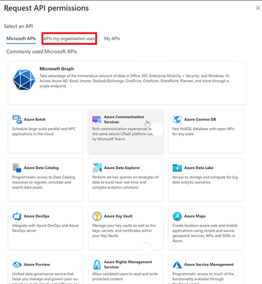
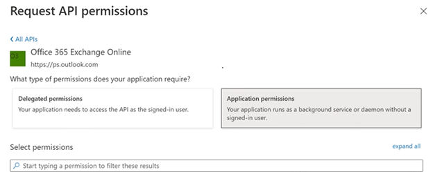
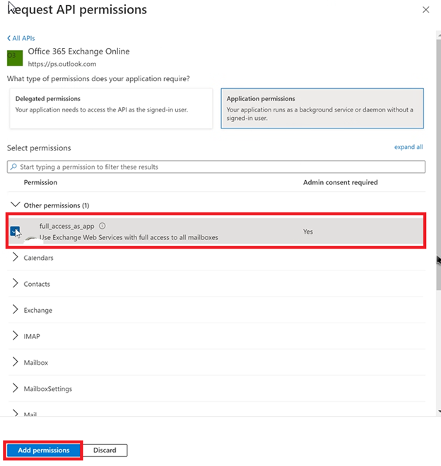
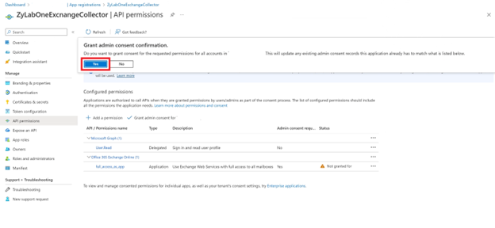
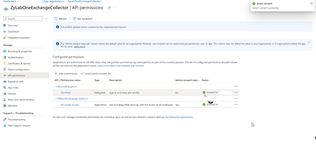

Go to App Registrations and select New Registration.

Complete the registration form.

-
Enter a name. This could be "ZyLabOneExchangeCollector" or another application name that seems appropriate.
-
Decide the account type. Determine if the application should be single tenant (for this organization only) or multitenant. Typically single tenant is chosen here.
-
The redirect URI is not needed.
-
Click Register.
You’ve now created a registration. From here, go to Certificates and secrets.
Select New Client Secret.

Enter a description and a duration. Click Add.

You will now be shown a screen with your client secret (value field). Please copy this value now as this is the ONLY time it will be displayed.

Click on API Permissions. Then click Add Permission.

Go to APIs my organization uses.

Search for Office and select Office 365 Exchange Online.

Select Application permissions.

Search for full and select full_access_as_app. Click Add permissions.

Click Grant Consent for (your companyname).

Select Yes.

You will now see that the consent was granted.

This finishes the creation of the App Registration that’s needed for the ZyLAB Exchange Collector. Please save the TentantID, AppID and ClientSecret for the next section.